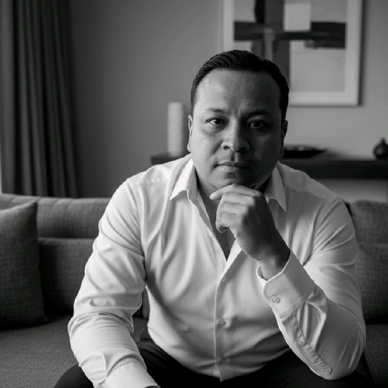

Manuel Barrón
Líder de la Práctica de Datos
Nfq — Beyond Consulting
Acompaño a las organizaciones a convertir sus datos en decisiones, todo esto considerando un gobierno de datos bajo el marco DAMA, arquitecturas cloud, procesamiento de datos (ETL/ELT), migraciones y modelos analíticos que explotan de la mejor manera el activo mas importante de toda organización.
Trabajo entre México, Brazil, Colombia, Perú y España, con equipos que entienden tanto el negocio como la ingeniería que lo sostiene.
- Estrategia y Gobierno de datos
- Ingeniería de datos
- Arquitectura y cloud
- Migraciones
- Analítica e IA